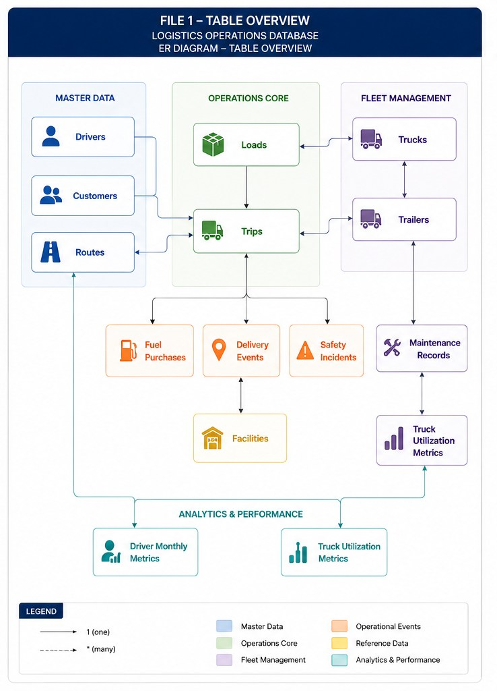
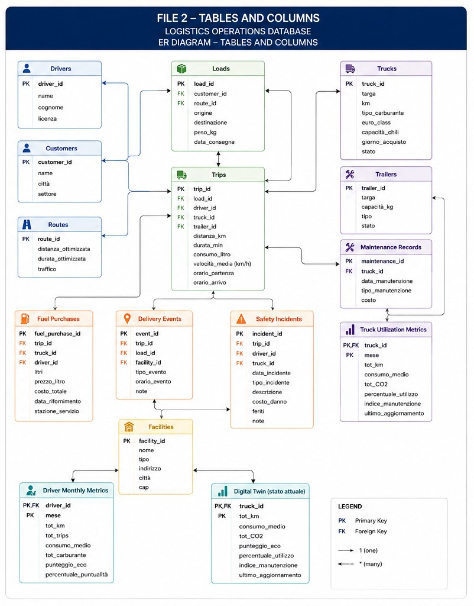
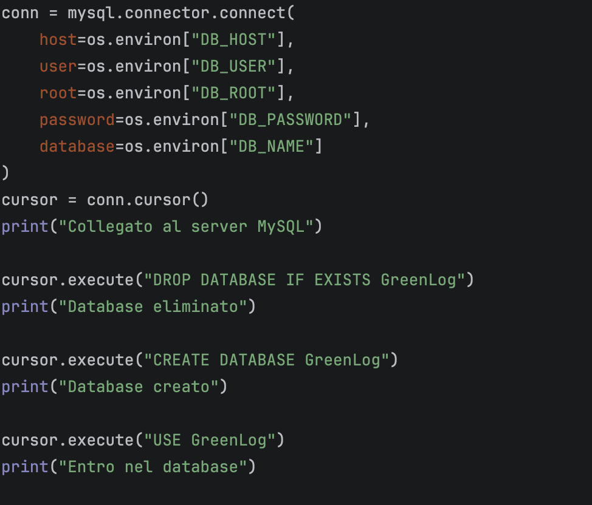

Pipeline dati
Modellare
Dall'analisi dei dati grezzi a uno schema relazionale MySQL: tabelle raggruppate per area, chiavi che collegano tutto e vincoli che tengono i dati coerenti.

In breve
- 15tabelleQuattordici arrivano dai file del dataset, la quindicesima è il digital twin.
- 6aree logicheAnagrafiche, operazioni, flotta, eventi, riferimenti e metriche.
- tripsla tabella pernoCollega carico, autista, camion e rimorchio. Rifornimenti, consegne e incidenti si agganciano al viaggio.
Le sei aree dello schema
Il raggruppamento segue i diagrammi ER del progetto. In verde il cuore operativo; la tabella scura è quella a cui si collegano più tabelle.
Anagrafiche
Chi lavora, per chi, su quali tratte.
- drivers
- customers
- routes
Operazioni
Il carico da consegnare e il viaggio che lo porta.
- loads
- trips
Flotta
Mezzi, rimorchi e la loro manutenzione.
- trucks
- trailers
- maintenance_records
Eventi operativi
Quello che succede durante un viaggio.
- fuel_purchases
- delivery_events
- safety_incidents
Riferimenti
I luoghi di carico e consegna.
- facilities
Metriche e analisi
Aggregati mensili e stato attuale di ogni mezzo.
- truck_utilization_metrics
- driver_monthly_metrics
- digital_twin
I diagrammi entità-relazione
Il primo mostra come si parlano le tabelle, il secondo le colonne con chiavi primarie (PK) ed esterne (FK) e le cardinalità uno-a-molti.


DRV00001Chiavi alfanumeriche native come primarie ed esterne: restano uguali ai file di origine.
FOREIGN KEYIntegrità referenziale, con ON DELETE CASCADE o RESTRICT a seconda della tabella.
ENUM · DECIMAL · DATETIMETipi precisi, più vincoli CHECK e UNIQUE per bloccare valori impossibili.
Dallo schema al database
Lo schema non è disegnato a mano sul server: lo crea uno script Python, creazione_db_v3.py, che si può rilanciare da zero.

- Connettersi senza credenziali nel codiceHost, utente, password e nome del database arrivano da
os.environ, caricato da un file.env. - Ripartire puliti
DROP DATABASE IF EXISTSe poiCREATE DATABASE GreenLog: ogni esecuzione produce lo stesso schema. - Creare le tabelleUna
CREATE TABLEper ciascuna delle 15 tabelle, con chiavi e vincoli già dichiarati. - Allineare le unitàLe colonne nascono già in unità metriche: litri al posto di galloni, chili al posto di libbre.
Strumenti usati
| Strumento | A cosa è servito |
|---|---|
| MySQL | Il database relazionale che conserva i dati. |
Python con mysql-connector-python | Eseguire gli script di creazione e dialogare con il database. |
python-dotenv | Tenere le credenziali in un file .env, fuori dal codice. |
| Software per diagrammi ER | Disegnare relazioni, cardinalità e vincoli prima di scrivere il codice. |
Cosa abbiamo imparato
- Progettare un databaseTradurre i bisogni di un'azienda logistica in uno schema normalizzato, con vincoli e tipi adatti.
- Preparare i datiPulizia, tipizzazione e unità di misura pensate prima del caricamento, così i nulli non rompono gli inserimenti.
- Tenere allineati disegno e codiceIl diagramma ER e lo script di creazione descrivono lo stesso database, tabella per tabella.